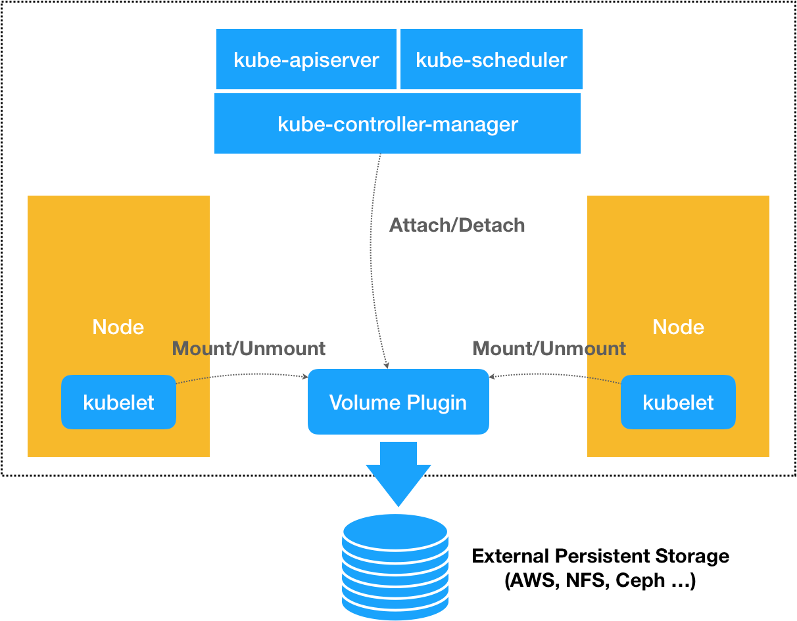
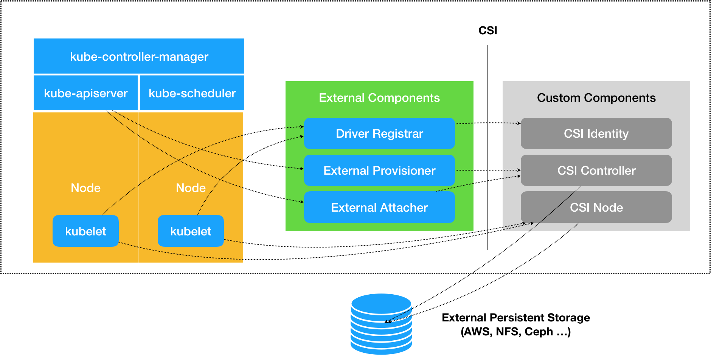

- 00 开篇词 打通“容器技术”的任督二脉.md.html
- 01 预习篇 · 小鲸鱼大事记（一）：初出茅庐.md.html
- 02 预习篇 · 小鲸鱼大事记（二）：崭露头角.md.html
- 03 预习篇 · 小鲸鱼大事记（三）：群雄并起.md.html
- 04 预习篇 · 小鲸鱼大事记（四）：尘埃落定.md.html
- 05 白话容器基础（一）：从进程说开去.md.html
- 06 白话容器基础（二）：隔离与限制.md.html
- 07 白话容器基础（三）：深入理解容器镜像.md.html
- 08 白话容器基础（四）：重新认识Docker容器.md.html
- 09 从容器到容器云：谈谈Kubernetes的本质.md.html
- 10 Kubernetes一键部署利器：kubeadm.md.html
- 11 从0到1：搭建一个完整的Kubernetes集群.md.html
- 12 牛刀小试：我的第一个容器化应用.md.html
- 13 为什么我们需要Pod？.md.html
- 14 深入解析Pod对象（一）：基本概念.md.html
- 15 深入解析Pod对象（二）：使用进阶.md.html
- 16 编排其实很简单：谈谈“控制器”模型.md.html
- 17 经典PaaS的记忆：作业副本与水平扩展.md.html
- 18 深入理解StatefulSet（一）：拓扑状态.md.html
- 19 深入理解StatefulSet（二）：存储状态.md.html
- 20 深入理解StatefulSet（三）：有状态应用实践.md.html
- 21 容器化守护进程的意义：DaemonSet.md.html
- 22 撬动离线业务：Job与CronJob.md.html
- 23 声明式API与Kubernetes编程范式.md.html
- 24 深入解析声明式API（一）：API对象的奥秘.md.html
- 25 深入解析声明式API（二）：编写自定义控制器.md.html
- 26 基于角色的权限控制：RBAC.md.html
- 27 聪明的微创新：Operator工作原理解读.md.html
- 28 PV、PVC、StorageClass，这些到底在说啥？.md.html
- 29 PV、PVC体系是不是多此一举？从本地持久化卷谈起.md.html
- 30 编写自己的存储插件：FlexVolume与CSI.md.html
- 31 容器存储实践：CSI插件编写指南.md.html
- 32 浅谈容器网络.md.html
- 33 深入解析容器跨主机网络.md.html
- 34 Kubernetes网络模型与CNI网络插件.md.html
- 35 解读Kubernetes三层网络方案.md.html
- 36 为什么说Kubernetes只有soft multi-tenancy？.md.html
- 37 找到容器不容易：Service、DNS与服务发现.md.html
- 38 从外界连通Service与Service调试“三板斧”.md.html
- 39 谈谈Service与Ingress.md.html
- 40 Kubernetes的资源模型与资源管理.md.html
- 41 十字路口上的Kubernetes默认调度器.md.html
- 42 Kubernetes默认调度器调度策略解析.md.html
- 43 Kubernetes默认调度器的优先级与抢占机制.md.html
- 44 Kubernetes GPU管理与Device Plugin机制.md.html
- 45 幕后英雄：SIG-Node与CRI.md.html
- 46 解读 CRI 与 容器运行时.md.html
- 47 绝不仅仅是安全：Kata Containers 与 gVisor.md.html
- 48 Prometheus、Metrics Server与Kubernetes监控体系.md.html
- 49 Custom Metrics_ 让Auto Scaling不再“食之无味”.md.html
- 50 让日志无处可逃：容器日志收集与管理.md.html
- 51 谈谈Kubernetes开源社区和未来走向.md.html
- 52 答疑：在问题中解决问题，在思考中产生思考.md.html
- 特别放送 2019 年，容器技术生态会发生些什么？.md.html
- 特别放送 基于 Kubernetes 的云原生应用管理，到底应该怎么做？.md.html
- 结束语 Kubernetes：赢开发者赢天下.md.html
- 捐赠
30 编写自己的存储插件：FlexVolume与CSI
你好，我是张磊。今天我和你分享的主题是：编写自己的存储插件之FlexVolume与CSI。
在上一篇文章中，我为你详细介绍了Kubernetes里的持久化存储体系，讲解了PV和PVC的具体实现原理，并提到了这样的设计实际上是出于对整个存储体系的可扩展性的考虑。
而在今天这篇文章中，我就和你分享一下如何借助这些机制，来开发自己的存储插件。
在Kubernetes中，存储插件的开发有两种方式：FlexVolume和CSI。
接下来，我就先为你剖析一下Flexvolume的原理和使用方法。
举个例子，现在我们要编写的是一个使用NFS实现的FlexVolume插件。
对于一个FlexVolume类型的PV来说，它的YAML文件如下所示：
apiVersion: v1
kind: PersistentVolume
metadata:
name: pv-flex-nfs
spec:
capacity:
storage: 10Gi
accessModes:
- ReadWriteMany
flexVolume:
driver: "k8s/nfs"
fsType: "nfs"
options:
server: "10.10.0.25" # 改成你自己的NFS服务器地址
share: "export"
可以看到，这个PV定义的Volume类型是flexVolume。并且，我们指定了这个Volume的driver叫作k8s/nfs。这个名字很重要，我后面马上会为你解释它的含义。
而Volume的options字段，则是一个自定义字段。也就是说，它的类型，其实是map[string]string。所以，你可以在这一部分自由地加上你想要定义的参数。
在我们这个例子里，options字段指定了NFS服务器的地址（server: “10.10.0.25”），以及NFS共享目录的名字（share: “export”）。当然，你这里定义的所有参数，后面都会被FlexVolume拿到。
备注：你可以使用这个Docker镜像轻松地部署一个试验用的NFS服务器。
像这样的一个PV被创建后，一旦和某个PVC绑定起来，这个FlexVolume类型的Volume就会进入到我们前面讲解过的Volume处理流程。
你应该还记得，这个流程的名字叫作“两阶段处理”，即“Attach阶段”和“Mount阶段”。它们的主要作用，是在Pod所绑定的宿主机上，完成这个Volume目录的持久化过程，比如为虚拟机挂载磁盘（Attach），或者挂载一个NFS的共享目录（Mount）。
备注：你可以再回顾一下第28篇文章《PV、PVC、StorageClass，这些到底在说啥？》中的相关内容。
而在具体的控制循环中，这两个操作实际上调用的，正是Kubernetes的pkg/volume目录下的存储插件（Volume Plugin）。在我们这个例子里，就是pkg/volume/flexvolume这个目录里的代码。
当然了，这个目录其实只是FlexVolume插件的入口。以“Mount阶段”为例，在FlexVolume目录里，它的处理过程非常简单，如下所示：
// SetUpAt creates new directory.
func (f *flexVolumeMounter) SetUpAt(dir string, fsGroup *int64) error {
...
call := f.plugin.NewDriverCall(mountCmd)
// Interface parameters
call.Append(dir)
extraOptions := make(map[string]string)
// pod metadata
extraOptions[optionKeyPodName] = f.podName
extraOptions[optionKeyPodNamespace] = f.podNamespace
...
call.AppendSpec(f.spec, f.plugin.host, extraOptions)
_, err = call.Run()
...
return nil
}
上面这个名叫SetUpAt()的方法，正是FlexVolume插件对“Mount阶段”的实现位置。而SetUpAt()实际上只做了一件事，那就是封装出了一行命令（即：NewDriverCall），由kubelet在“Mount阶段”去执行。
在我们这个例子中，kubelet要通过插件在宿主机上执行的命令，如下所示：
/usr/libexec/kubernetes/kubelet-plugins/volume/exec/k8s~nfs/nfs mount <mount dir> <json param>
其中，/usr/libexec/kubernetes/kubelet-plugins/volume/exec/k8s~nfs/nfs就是插件的可执行文件的路径。这个名叫nfs的文件，正是你要编写的插件的实现。它可以是一个二进制文件，也可以是一个脚本。总之，只要能在宿主机上被执行起来即可。
而且这个路径里的k8s~nfs部分，正是这个插件在Kubernetes里的名字。它是从driver=“k8s/nfs”字段解析出来的。
这个driver字段的格式是：vendor/driver。比如，一家存储插件的提供商（vendor）的名字叫作k8s，提供的存储驱动（driver）是nfs，那么Kubernetes就会使用k8s~nfs来作为插件名。
所以说，当你编写完了FlexVolume的实现之后，一定要把它的可执行文件放在每个节点的插件目录下。
而紧跟在可执行文件后面的“mount”参数，定义的就是当前的操作。在FlexVolume里，这些操作参数的名字是固定的，比如init、mount、unmount、attach，以及dettach等等，分别对应不同的Volume处理操作。
而跟在mount参数后面的两个字段：<mount dir>和<json params>，则是FlexVolume必须提供给这条命令的两个执行参数。
其中第一个执行参数<mount dir>，正是kubelet调用SetUpAt()方法传递来的dir的值。它代表的是当前正在处理的Volume在宿主机上的目录。在我们的例子里，这个路径如下所示：
/var/lib/kubelet/pods/<Pod ID>/volumes/k8s~nfs/test
其中，test正是我们前面定义的PV的名字；而k8s~nfs，则是插件的名字。可以看到，插件的名字正是从你声明的driver=“k8s/nfs”字段里解析出来的。
而第二个执行参数<json params>，则是一个JSON Map格式的参数列表。我们在前面PV里定义的options字段的值，都会被追加在这个参数里。此外，在SetUpAt()方法里可以看到，这个参数列表里还包括了Pod的名字、Namespace等元数据（Metadata）。
在明白了存储插件的调用方式和参数列表之后，这个插件的可执行文件的实现部分就非常容易理解了。
在这个例子中，我直接编写了一个简单的shell脚本来作为插件的实现，它对“Mount阶段”的处理过程，如下所示：
domount() {
MNTPATH=$1
NFS_SERVER=$(echo $2 | jq -r '.server')
SHARE=$(echo $2 | jq -r '.share')
...
mkdir -p ${MNTPATH} &> /dev/null
mount -t nfs ${NFS_SERVER}:/${SHARE} ${MNTPATH} &> /dev/null
if [ $? -ne 0 ]; then
err "{ \"status\": \"Failure\", \"message\": \"Failed to mount ${NFS_SERVER}:${SHARE} at ${MNTPATH}\"}"
exit 1
fi
log '{"status": "Success"}'
exit 0
}
可以看到，当kubelet在宿主机上执行“nfs mount <mount dir> <json params>”的时候，这个名叫nfs的脚本，就可以直接从<mount dir>参数里拿到Volume在宿主机上的目录，即：MNTPATH=$1。而你在PV的options字段里定义的NFS的服务器地址（options.server）和共享目录名字（options.share），则可以从第二个<json params>参数里解析出来。这里，我们使用了jq命令，来进行解析工作。
有了这三个参数之后，这个脚本最关键的一步，当然就是执行：mount -t nfs ${NFS_SERVER}:/${SHARE} ${MNTPATH} 。这样，一个NFS的数据卷就被挂载到了MNTPATH，也就是Volume所在的宿主机目录上，一个持久化的Volume目录就处理完了。
需要注意的是，当这个mount -t nfs操作完成后，你必须把一个JOSN格式的字符串，比如：{“status”: “Success”}，返回给调用者，也就是kubelet。这是kubelet判断这次调用是否成功的唯一依据。
综上所述，在“Mount阶段”，kubelet的VolumeManagerReconcile控制循环里的一次“调谐”操作的执行流程，如下所示：
kubelet --> pkg/volume/flexvolume.SetUpAt() --> /usr/libexec/kubernetes/kubelet-plugins/volume/exec/k8s~nfs/nfs mount <mount dir> <json param>
备注：这个NFS的FlexVolume的完整实现，在这个GitHub库里。而你如果想用Go语言编写FlexVolume的话，我也有一个很好的例子供你参考。
当然，在前面文章中我也提到过，像NFS这样的文件系统存储，并不需要在宿主机上挂载磁盘或者块设备。所以，我们也就不需要实现attach和dettach操作了。
不过，像这样的FlexVolume实现方式，虽然简单，但局限性却很大。
比如，跟Kubernetes内置的NFS插件类似，这个NFS FlexVolume插件，也不能支持Dynamic Provisioning（即：为每个PVC自动创建PV和对应的Volume）。除非你再为它编写一个专门的External Provisioner。
再比如，我的插件在执行mount操作的时候，可能会生成一些挂载信息。这些信息，在后面执行unmount操作的时候会被用到。可是，在上述FlexVolume的实现里，你没办法把这些信息保存在一个变量里，等到unmount的时候直接使用。
这个原因也很容易理解：FlexVolume每一次对插件可执行文件的调用，都是一次完全独立的操作。所以，我们只能把这些信息写在一个宿主机上的临时文件里，等到unmount的时候再去读取。
这也是为什么，我们需要有Container Storage Interface（CSI）这样更完善、更编程友好的插件方式。
接下来，我就来为你讲解一下开发存储插件的第二种方式CSI。我们先来看一下CSI插件体系的设计原理。
其实，通过前面对FlexVolume的讲述，你应该可以明白，默认情况下，Kubernetes里通过存储插件管理容器持久化存储的原理，可以用如下所示的示意图来描述：
- 可以看到，在上述体系下，无论是FlexVolume，还是Kubernetes内置的其他存储插件，它们实际上担任的角色，仅仅是Volume管理中的“Attach阶段”和“Mount阶段”的具体执行者。而像Dynamic Provisioning这样的功能，就不是存储插件的责任，而是Kubernetes本身存储管理功能的一部分。
相比之下，CSI插件体系的设计思想，就是把这个Provision阶段，以及Kubernetes里的一部分存储管理功能，从主干代码里剥离出来，做成了几个单独的组件。这些组件会通过Watch API监听Kubernetes里与存储相关的事件变化，比如PVC的创建，来执行具体的存储管理动作。
而这些管理动作，比如“Attach阶段”和“Mount阶段”的具体操作，实际上就是通过调用CSI插件来完成的。
这种设计思路，我可以用如下所示的一幅示意图来表示：- - 可以看到，这套存储插件体系多了三个独立的外部组件（External Components），即：Driver Registrar、External Provisioner和External Attacher，对应的正是从Kubernetes项目里面剥离出来的那部分存储管理功能。
需要注意的是，External Components虽然是外部组件，但依然由Kubernetes社区来开发和维护。
而图中最右侧的部分，就是需要我们编写代码来实现的CSI插件。一个CSI插件只有一个二进制文件，但它会以gRPC的方式对外提供三个服务（gRPC Service），分别叫作：CSI Identity、CSI Controller和CSI Node。
我先来为你讲解一下这三个External Components。
其中，Driver Registrar组件，负责将插件注册到kubelet里面（这可以类比为，将可执行文件放在插件目录下）。而在具体实现上，Driver Registrar需要请求CSI插件的Identity服务来获取插件信息。
而External Provisioner组件，负责的正是Provision阶段。在具体实现上，External Provisioner监听（Watch）了APIServer里的PVC对象。当一个PVC被创建时，它就会调用CSI Controller的CreateVolume方法，为你创建对应PV。
此外，如果你使用的存储是公有云提供的磁盘（或者块设备）的话，这一步就需要调用公有云（或者块设备服务）的API来创建这个PV所描述的磁盘（或者块设备）了。
不过，由于CSI插件是独立于Kubernetes之外的，所以在CSI的API里不会直接使用Kubernetes定义的PV类型，而是会自己定义一个单独的Volume类型。
为了方便叙述，在本专栏里，我会把Kubernetes里的持久化卷类型叫作PV，把CSI里的持久化卷类型叫作CSI Volume，请你务必区分清楚。
最后一个External Attacher组件，负责的正是“Attach阶段”。在具体实现上，它监听了APIServer里VolumeAttachment对象的变化。VolumeAttachment对象是Kubernetes确认一个Volume可以进入“Attach阶段”的重要标志，我会在下一篇文章里为你详细讲解。
一旦出现了VolumeAttachment对象，External Attacher就会调用CSI Controller服务的ControllerPublish方法，完成它所对应的Volume的Attach阶段。
而Volume的“Mount阶段”，并不属于External Components的职责。当kubelet的VolumeManagerReconciler控制循环检查到它需要执行Mount操作的时候，会通过pkg/volume/csi包，直接调用CSI Node服务完成Volume的“Mount阶段”。
在实际使用CSI插件的时候，我们会将这三个External Components作为sidecar容器和CSI插件放置在同一个Pod中。由于External Components对CSI插件的调用非常频繁，所以这种sidecar的部署方式非常高效。
接下来，我再为你讲解一下CSI插件的里三个服务：CSI Identity、CSI Controller和CSI Node。
其中，CSI插件的CSI Identity服务，负责对外暴露这个插件本身的信息，如下所示：
service Identity {
// return the version and name of the plugin
rpc GetPluginInfo(GetPluginInfoRequest)
returns (GetPluginInfoResponse) {}
// reports whether the plugin has the ability of serving the Controller interface
rpc GetPluginCapabilities(GetPluginCapabilitiesRequest)
returns (GetPluginCapabilitiesResponse) {}
// called by the CO just to check whether the plugin is running or not
rpc Probe (ProbeRequest)
returns (ProbeResponse) {}
}
而CSI Controller服务，定义的则是对CSI Volume（对应Kubernetes里的PV）的管理接口，比如：创建和删除CSI Volume、对CSI Volume进行Attach/Dettach（在CSI里，这个操作被叫作Publish/Unpublish），以及对CSI Volume进行Snapshot等，它们的接口定义如下所示：
service Controller {
// provisions a volume
rpc CreateVolume (CreateVolumeRequest)
returns (CreateVolumeResponse) {}
// deletes a previously provisioned volume
rpc DeleteVolume (DeleteVolumeRequest)
returns (DeleteVolumeResponse) {}
// make a volume available on some required node
rpc ControllerPublishVolume (ControllerPublishVolumeRequest)
returns (ControllerPublishVolumeResponse) {}
// make a volume un-available on some required node
rpc ControllerUnpublishVolume (ControllerUnpublishVolumeRequest)
returns (ControllerUnpublishVolumeResponse) {}
...
// make a snapshot
rpc CreateSnapshot (CreateSnapshotRequest)
returns (CreateSnapshotResponse) {}
// Delete a given snapshot
rpc DeleteSnapshot (DeleteSnapshotRequest)
returns (DeleteSnapshotResponse) {}
...
}
不难发现，CSI Controller服务里定义的这些操作有个共同特点，那就是它们都无需在宿主机上进行，而是属于Kubernetes里Volume Controller的逻辑，也就是属于Master节点的一部分。
需要注意的是，正如我在前面提到的那样，CSI Controller服务的实际调用者，并不是Kubernetes（即：通过pkg/volume/csi发起CSI请求），而是External Provisioner和External Attacher。这两个External Components，分别通过监听 PVC和VolumeAttachement对象，来跟Kubernetes进行协作。
而CSI Volume需要在宿主机上执行的操作，都定义在了CSI Node服务里面，如下所示：
service Node {
// temporarily mount the volume to a staging path
rpc NodeStageVolume (NodeStageVolumeRequest)
returns (NodeStageVolumeResponse) {}
// unmount the volume from staging path
rpc NodeUnstageVolume (NodeUnstageVolumeRequest)
returns (NodeUnstageVolumeResponse) {}
// mount the volume from staging to target path
rpc NodePublishVolume (NodePublishVolumeRequest)
returns (NodePublishVolumeResponse) {}
// unmount the volume from staging path
rpc NodeUnpublishVolume (NodeUnpublishVolumeRequest)
returns (NodeUnpublishVolumeResponse) {}
// stats for the volume
rpc NodeGetVolumeStats (NodeGetVolumeStatsRequest)
returns (NodeGetVolumeStatsResponse) {}
...
// Similar to NodeGetId
rpc NodeGetInfo (NodeGetInfoRequest)
returns (NodeGetInfoResponse) {}
}
需要注意的是，“Mount阶段”在CSI Node里的接口，是由NodeStageVolume和NodePublishVolume两个接口共同实现的。我会在下一篇文章中，为你详细介绍这个设计的目的和具体的实现方式。
总结
在本篇文章里，我为你详细讲解了FlexVolume和CSI这两种自定义存储插件的工作原理。
可以看到，相比于FlexVolume，CSI的设计思想，把插件的职责从“两阶段处理”，扩展成了Provision、Attach和Mount三个阶段。其中，Provision等价于“创建磁盘”，Attach等价于“挂载磁盘到虚拟机”，Mount等价于“将该磁盘格式化后，挂载在Volume的宿主机目录上”。
在有了CSI插件之后，Kubernetes本身依然按照我在第28篇文章《PV、PVC、StorageClass，这些到底在说啥？》中所讲述的方式工作，唯一区别在于：
- 当AttachDetachController需要进行“Attach”操作时（“Attach阶段”），它实际上会执行到pkg/volume/csi目录中，创建一个VolumeAttachment对象，从而触发External Attacher调用CSI Controller服务的ControllerPublishVolume方法。
- 当VolumeManagerReconciler需要进行“Mount”操作时（“Mount阶段”），它实际上也会执行到pkg/volume/csi目录中，直接向CSI Node服务发起调用NodePublishVolume方法的请求。
以上，就是CSI插件最基本的工作原理了。
在下一篇文章里，我会和你一起实践一个CSI存储插件的完整实现过程。
思考题
假设现在，你的宿主机是阿里云的一台虚拟机，你要实现的容器持久化存储，是基于阿里云提供的云盘。你能准确地描述出，在Provision、Attach和Mount阶段，CSI插件都需要做哪些操作吗？
感谢你的收听，欢迎你给我留言，也欢迎分享给更多的朋友一起阅读。
© 2019 - 2023 Liangliang Lee. Powered by gin and hexo-theme-book.